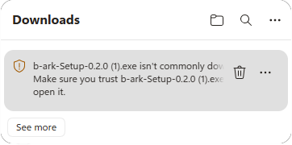
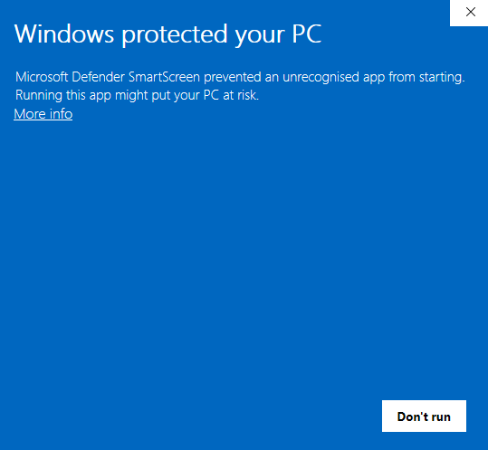
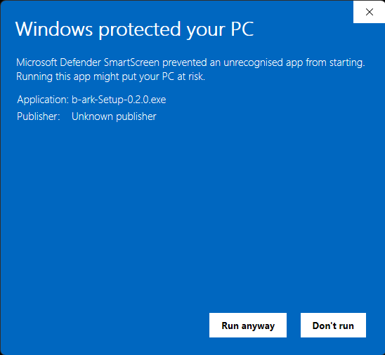
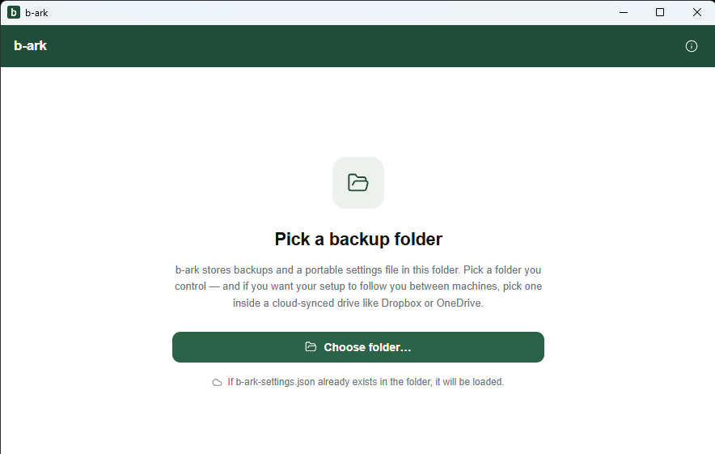
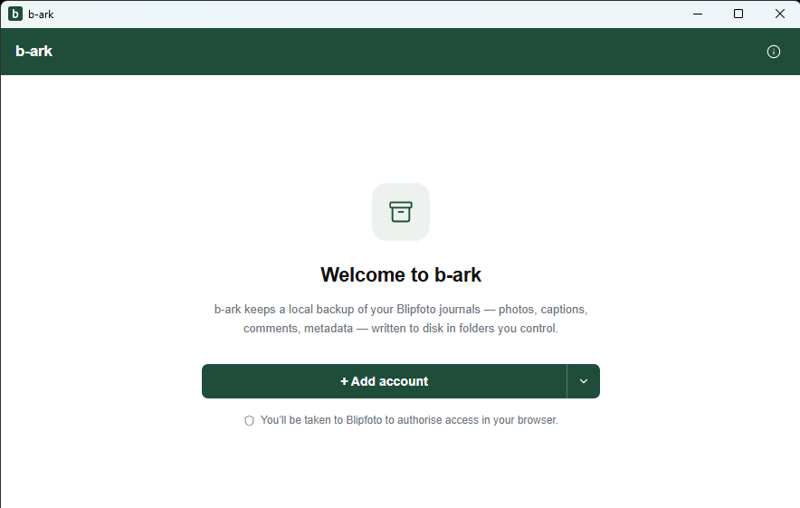
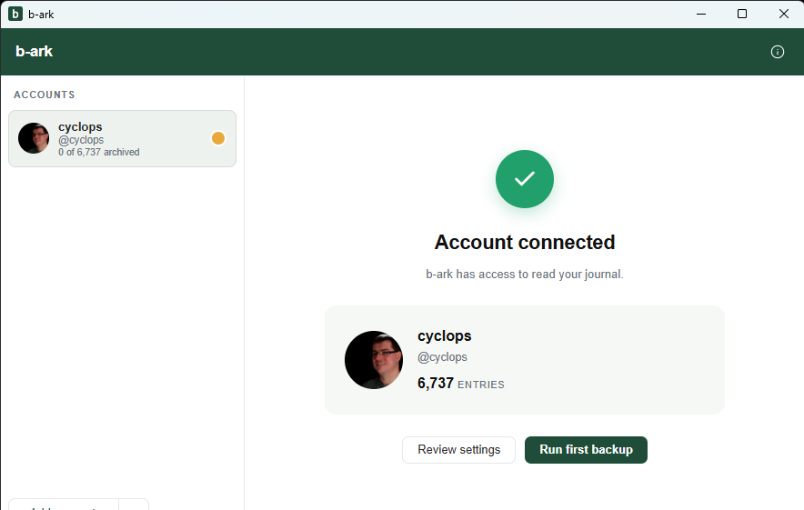
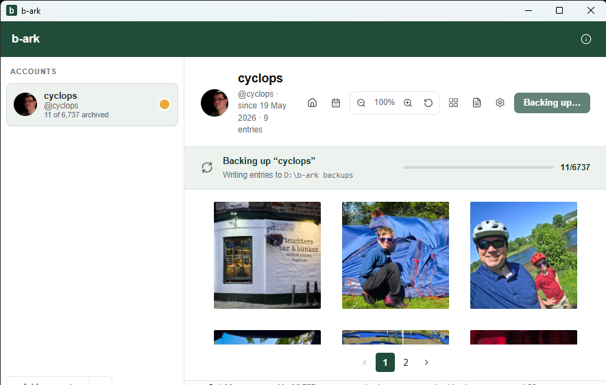
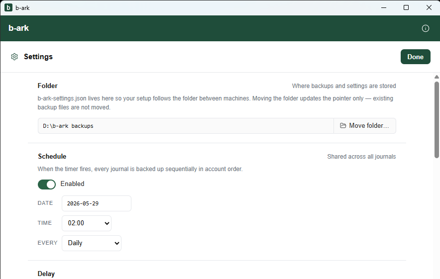
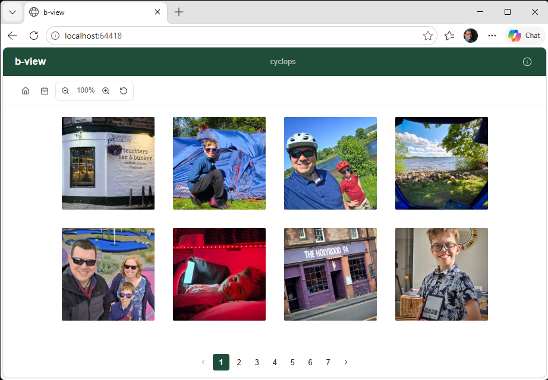
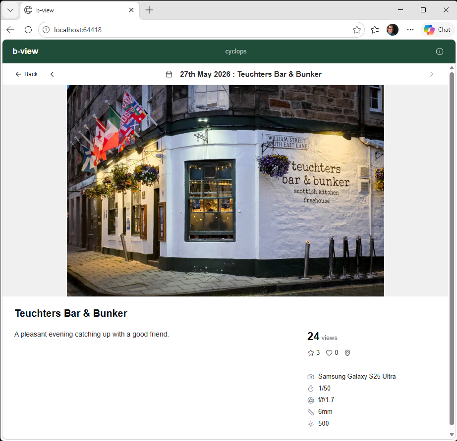

b-ark user guide
Install, set up, and get the most out of b-ark: every photo, caption, comment and piece of metadata, safely on your own machine.
1. Download
Go to the
b-ark releases page and
download the latest b-ark-Setup-x.x.x.exe file.
2. Browser download warning
Because the b-ark installer is not signed by a commercial certificate authority, your browser will warn you before saving it. The steps differ slightly by browser.
Microsoft Edge
After the download completes, Edge shows a warning in the downloads panel.

- Click the "…" (three dots) on the download entry.
- Choose "Keep".
- If a further confirmation appears, click "Show more" → "Keep anyway".
Google Chrome
Chrome may shows the file in the downloads bar at the bottom of the window with a warning icon.
- Click the chevron or down arrow (▾) next to the "Discard" button.
- Choose "Keep dangerous download".
- If prompted again, click "Keep anyway".
3. Windows SmartScreen warning
When you run the installer, Windows Defender SmartScreen shows a blue dialog because b-ark has not yet built up a reputation with Microsoft.

- Click "More info" (the text link near the bottom-left of the dialog).

- Click "Run anyway".
- If a User Account Control (UAC) prompt follows, click "Yes".
4. Installation
The installer runs silently with no options to choose. It installs b-ark into your user profile (no administrator rights required) and launches the app when it finishes.
5. Choose a backup folder
The first thing b-ark asks you to do is pick a folder where it will store your backup files and its portable settings.

- Click "Choose folder…".
- Select an existing empty folder, or create a new one, then confirm.
Tip: If you pick a folder inside a cloud-synced drive (OneDrive, Dropbox, Google Drive, etc.), your b-ark settings will follow you automatically if you install b-ark on another machine and point it at the same cloud folder.
If a b-ark-settings.json file already exists in the folder you choose (e.g.
setting up on a new machine), b-ark will load your previous settings automatically.
6. Add your blipfoto account
After choosing a folder, b-ark shows the welcome screen.

- Click "+ Add account".
- Your default browser opens to the blipfoto authorisation page. Log in and approve access.
- Your browser returns you to b-ark, which shows the "Account connected" screen with your journal title, username, and entry count.

Adding a second account
If you manage more than one blipfoto journal, you can add multiple accounts:
- Once you're in the main view, click "+ Add account…" at the bottom of the left-hand sidebar.
- If you need to sign in to blipfoto with a different browser identity (for example, you are already logged in to blipfoto in your browser as one user), click the small dropdown arrow next to the button and choose "Force new sign-in…". This opens a fresh sign-in window inside b-ark so you don't have to log out of your browser first.
7. Run your first backup
After connecting your account you are taken to a confirmation screen. Click "Run first backup" to start immediately, or "Review settings" to adjust the schedule first.
You can also start a backup at any time using the "Backup now" button in the main toolbar.

While backing up, a progress banner shows which phase b-ark is in:
| Phase | What it means |
|---|---|
| NEW | Fetching entries b-ark has never downloaded before. |
| GAPS | Filling in any entries that were missed on previous runs. |
| REDO | Re-downloading your most recent entries in case captions or comments have changed. |
| FIX | Repairing any images that failed to download cleanly on a previous run. |
If blipfoto's rate limit is reached mid-backup, b-ark pauses and counts down automatically before resuming. No action needed.
Your journal thumbnails appear in the main view.
8. Settings reference
Open the settings panel by clicking the gear icon in the toolbar, or by clicking "Review settings" after connecting an account.

| Setting | What it does |
|---|---|
| Folder | Shows where your backups are stored (read-only). Click "Move folder…" to point b-ark at a new location. Only the settings file moves; existing backup files stay where they are. |
| Schedule | Enable or disable automated backups, and set the start date, time of day, and interval (Daily / Weekly / Monthly). This schedule is shared across all accounts. |
| Delay | A pause (in milliseconds) that b-ark inserts between each call to the blipfoto API during a backup. Increasing this makes backups slower but gentler on your network during working hours. Default: 0. |
| Gap check | How many days back b-ark looks on each run to catch entries it may have missed previously. Useful after a period offline or an interrupted backup. |
| Redo | How many of your most-recent entries b-ark re-downloads on every run, to pick up any edits to captions, titles, or comments since the last backup. |
| Start with Windows | When enabled, b-ark opens silently to the system tray each time you log in, so scheduled backups keep running without you having to remember to launch the app. |
| Check for updates automatically | b-ark checks GitHub for a newer release each time it starts and offers to install it if one is available. |
9. Browsing your journal with b-view
The b-ark app uses b-view to display and browse journal entries. It has a thumbnail grid view and an entry view.
Thumbnail grid

- Zoom controls (+ / − / reset) adjust thumbnail size between 30% and 200%.
- Left and right arrow keys move between pages of thumbnails.
- The calendar icon opens a date picker so you can jump straight to a specific month and year.
- Click any thumbnail to open the full entry.
Entry view

Inside an entry you can see the full-size photo, title, description, tags, comments (including nested replies), engagement counts (views, stars, favourites), location, and camera EXIF data if present.
- Left and right arrow keys (or the on-screen chevrons) move to the previous or next entry.
- The calendar icon is available here too, for jumping to a specific date.
- Click the back button to return to the thumbnail grid.
b-view in the browser
If you want to browse your journal in your normal web browser, click "Open in browser" in the main toolbar. Your default browser opens a locally-served copy of b-view showing your full journal.
b-view direct (without b-ark installed)
Your backup folder contains an index.html file. Open it in Chrome, Edge or
Firefox.
- b-view prompts you to "Open backup folder": click it and select the backup folder using the native folder picker.
- After that, navigation is identical to the browser mode above.
Note: This mode requires the File System Access API, which is supported in Chrome, Edge and Firefox. Safari and older browsers are not supported.
b-view for publishing a website
b-view can be used to publish your backup as a website if you so wish. Copy your backup folder to any static web host and browse to the URL. b-view does the rest. No setup required.
10. Using your backup with AI
Each account's backup folder contains a README.md file. It explains your
journal's data format and gives guidance on using the backup with AI assistants:
Claude, ChatGPT, Copilot, Gemini, and others.
The README includes:
- Ready-to-use example prompts ("Create a PDF of all entries from 2022", "Find my 10 happiest-sounding entries", "What cameras have I used over the years?").
- Instructions for the AI on how to approach large journals (a two-pass method: score and shortlist all entries first, then produce the requested output).
- The full data schema so the AI understands the file and folder structure.
Recommended workflow using Claude Projects
- Create a new Claude Project.
- Upload your backup folder, or the files within it.
- Start your first message with: "Please read the README.md file in this backup before we start."
- Describe what you want: a photo book, a timeline, a search, a summary, or something else.
Example prompts
Here are some examples of things you could ask an AI to do with your backup. Feel free to adapt them.
By date
- "Create a PDF document of all my entries from 2022."
- "Make a presentation of my entries between 1st and 31st August 2019."
By tag or keyword
- "Build a photo book of all my entries tagged 'walking'."
- "Create a presentation of entries where I mention my dog."
By engagement
- "Make a presentation of my 20 most favourited entries."
- "Create a spreadsheet showing how many entries I posted each month, and which got the most views."
By mood or theme
- "Find my 10 happiest-sounding entries and make a presentation."
- "Create a document of entries where I seem to be reflecting on getting older."
By camera or location
- "Make a photo book of everything I shot on my Fujifilm X100."
- "Create a presentation of all my entries taken in Japan."
Questions and searches
Not every request needs to produce a document. Sometimes you just want an answer. Try:
- "What are the dates of all my entries that mention Brighton?"
- "Where did I buy the loganberry jam I mentioned?"
- "How many entries did I post in 2018, and which month was most active?"
- "What cameras have I used over the years?"
Viewing README.md on Windows
If you don't already have a viewer installed for .md (markdown) files, you
can right-click and use the "Open with…" option and select
"Notepad".